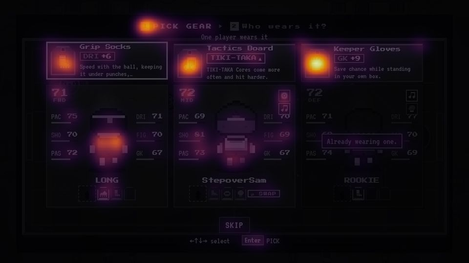
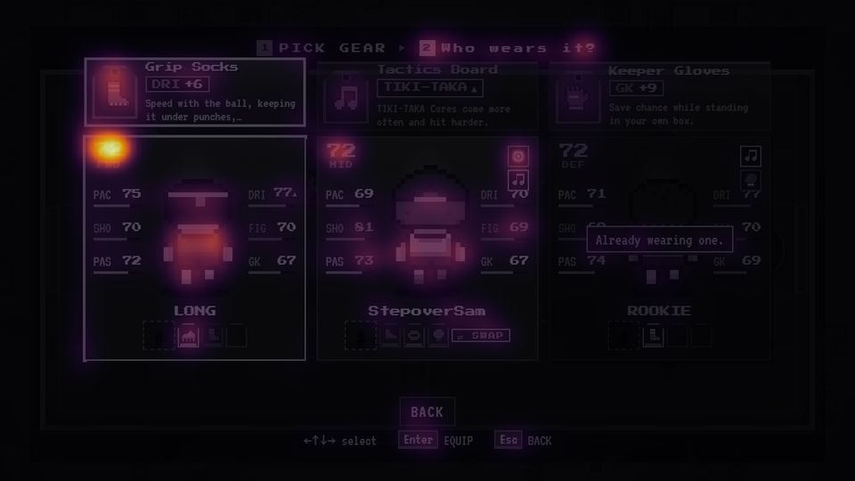

Owner thấy màn chọn GEAR rối. Mình chụp lại màn hiện tại trên main (bản phương án B đã làm 05/11), soi bằng nheo mắt, trắng đen, bản đồ mắt (saliency), thứ tự anim, đếm thông tin, cho 1 "mắt mới" chỉ xem ảnh làm test 5 giây, tra 15 game có màn tương tự, rồi dựng 5 phương án.
Owner chọn B (2026-11-06), đã làm vào game. Ảnh game sau khi sửa: docs/ux-gear/shots/after/.
Bấm PHƯƠNG ÁN / TRẠNG THÁI / CÁCH XEM trên khung để so. ▶ PHÁT LẠI ANIM diễn thứ tự hiện ra của phương án đang xem. Phân tích ở dưới khung.
Màn rối vì 3 chuyện cùng lúc: (1) thứ đang phải chọn lại nhỏ nhất màn: ở bước 1 (chọn món) 3 thẻ cầu thủ chiếm diện tích gấp 3,2 lần 3 món, và nheo mắt thì nổi nhất là nhân vật + ô đỏ báo lỗi chứ không phải món; (2) mỗi thẻ cầu thủ chở khoảng 15 thứ (OVR, 6 chỉ số 6 màu có vạch, icon trường phái, ô LEGEND, 3 ô GEAR...) trong khi món đang trỏ chỉ đụng 1 chỉ số: màn có 25 con số và 13 màu, màn BADGE cùng loại có 0 số và 2 màu; (3) món và cầu thủ cùng bề ngang, xếp thẳng hàng, khe giữa 2 hàng (14 px) hẹp hơn khe giữa 2 cột (16 px), nên mắt đọc thành 3 cặp "món này của người này". Mắt mới tự nói đúng câu đó mà không được gợi ý, và đọc nhầm "Already wearing one." là nói về Keeper Gloves.
Chọn: B · TO NHỎ THEO BƯỚC (bước nào thì thứ đó to, thẻ cầu thủ chỉ còn 1 dòng "món này làm gì cho người này", bỏ hẳn bước 3 riêng). A nếu muốn sửa nhanh trên bản đang có. C nếu ưu tiên tốc độ (1 lần bấm). Lý do ở mục CHỌN cuối trang.
| Kỹ thuật | Hỏi gì | Ở đâu |
|---|---|---|
| Nheo mắt (Gaussian 12px) | Còn lại khối nào? Khối đó có phải việc chính không? | CÁCH XEM › NHEO MẮT |
| Trắng đen | Bỏ màu thì "đang chọn" còn phân biệt được không? Thứ bậc có dựa hết vào màu không? | CÁCH XEM › TRẮNG ĐEN |
| Bản đồ mắt (saliency, spectral residual trên L, a, b) | Máy đoán mắt rơi vào đâu trước. Không thay người thật nhưng không bị "biết trước" như mình. | CÁCH XEM › BẢN ĐỒ MẮT |
| Gestalt: gần nhau / cùng hàng / giống nhau | Mắt gom thứ gì với thứ gì? Có gom sai không? | đo khe hàng / cột trên DOM |
| Tỉ lệ diện tích theo việc | Bao nhiêu % màn dành cho thứ đang phải chọn? | đo trên DOM |
| Kiểm kê thông tin theo quyết định | Mỗi thứ trên màn trả lời câu hỏi nào? Câu đó có cần ở bước này không? Bỏ / dời / để tooltip. | bảng KIỂM KÊ |
| Đếm "mực": chữ, số, khung, màu, họ màu | So với màn cùng loại trong game (BADGE, nhận LEGEND). | bảng SỐ ĐO |
| Ngữ nghĩa màu | Mỗi màu đang mang mấy nghĩa? | vấn đề #4 |
| Thứ tự anim + khoá phím | Mắt được dẫn theo thứ tự nào? Bấm Enter liên tay từ màn kết quả thì chuyện gì xảy ra? | ▶ PHÁT LẠI ANIM + dòng thời gian dưới khung |
| Độ ổn định bố cục giữa các bước | Qua bước sau, thứ gì nhảy chỗ? | so ảnh bước 1 / 2 / 3 |
| Đếm thao tác (Hick, số lần bấm) | Màn gặp ~12 lần mỗi run: ca thường tốn mấy lần bấm? | bảng SO SÁNH |
| Mắt mới (test 5 giây) | 1 agent chỉ xem ảnh, không đọc code: màn để làm gì, mắt rơi đâu, gom gì với gì, xoá nửa màn thì xoá gì. | docs/ux-gear/fresh.md |
| Tra game khác | 15 game có "nhận đồ → chọn ai dùng": làm lúc nào, hiện gì, đầy ô thì sao. | mục GAME KHÁC |
| Màn | Mẩu chữ | Con số | Khung | Màu chữ / viền | Họ màu | Mật độ cạnh | Điểm nổi nhất (bản đồ mắt) |
|---|---|---|---|---|---|---|---|
| GEAR · bước 1 | 69 | 25 | 20 | 13 | 7 | 5,1% | icon Keeper Gloves (món không chọn) → icon Tactics Board → ô số 1 → mới tới Grip Socks đang chọn |
| GEAR · bước 2 | 71 | 25 | 21 | 14 | 7 | 5,2% | số OVR 72 xanh (làm tròn trung bình 6 chỉ số) — còn DRI 77▲ (cái thật sự đổi) gần như không nổi |
| GEAR · bước 3 (bỏ món) | 15 | 4 | 9 | 5 | 5 | 3,0% | 3 icon món đang đeo, đều nhau |
| BADGE (cùng kiểu chọn 1 trong 3) | 10 | 0 | 14 | 2 | 5 | 3,3% | tiêu đề, rồi miếng vá |
| LEGEND "Who gets him?" | 61 | 21 | 14 | 11 | 6 | 5,0% | chân dung LEGEND, thẻ cầu thủ |
Họ màu = số dải màu bão hoà (12 dải 30°) có mặt trên màn; các màn UI khác của run có 2–5 (Pause 2, kết quả 3, map 4, BADGE 5), GEAR 7 ngang KIT VAN (cảnh pixel art). Mật độ cạnh (Canny) không cao bất thường: GEAR rối vì nhiều loại tín hiệu (số, màu, khung, icon) chứ không phải vì nhiều nét.


| # | Thấy gì | Lộ ra nhờ |
|---|---|---|
| 1 | Thứ đang chọn nhỏ nhất màn. Bước 1 là chọn món, nhưng 3 thẻ cầu thủ chiếm 334.656 px² so với 103.584 px² của 3 món (gấp 3,2). Mắt mới: "nhìn qua tưởng màn chọn nhân vật / màn đội hình". | diện tích · mắt mới |
| 2 | Đọc thành 3 cột ghép đôi. Món rộng bằng thẻ cầu thủ, đặt thẳng trên đầu, khe hàng 14 px < khe cột 16 px. Mắt mới: "Grip Socks + LONG, Tactics Board + StepoverSam, Keeper Gloves + ROOKIE". Đúng thứ owner lo hôm 05/11 ("chưa hiểu là chọn cho 1 trong 3"), giờ do bố cục gây ra. | Gestalt · mắt mới |
| 3 | Thông tin không phục vụ quyết định. Grip Socks chỉ đụng DRI, nhưng màn hiện 18 chỉ số + 3 OVR + 6 icon trường phái + 3 ô LEGEND. 25 con số; quyết định cần 3 (DRI của 3 người). Mắt mới muốn xoá đầu tiên: "6 chỉ số trên thẻ cầu thủ". | kiểm kê · mắt mới |
| 4 | Màu mang nhiều nghĩa. Vàng = đang chọn, bước đang làm, số OVR, chỉ số PAS, trường phái TIKI-TAKA, icon trường phái trùng. Xanh lá = "cao hơn nền nhờ đồ" và "OVR sắp lên". Đỏ = lỗi, chỉ số FIG, chấn thương. 7 họ màu, cao nhất trong các màn UI. | trắng đen · đếm màu |
| 5 | Món đang chọn yếu hơn món hiếm. Bản đồ mắt: icon Keeper Gloves (sử thi, tím) và Tactics Board sáng nhất; Grip Socks đang chọn đứng thứ 4. Nheo mắt: khung vàng gần như mất. Độ hiếm tô cả nền thẻ treo nên át "đang chọn". | bản đồ mắt · nheo |
| 6 | Lời báo âm thanh to nhất màn. "Already wearing one." đỏ kiểu lỗi, hiện ngay bước 1 (chưa chọn ai), là khối nổi thứ 2 khi nheo, che 2 chỉ số, và bị đọc nhầm sang món khác (#2). | nheo · mắt mới |
| 7 | Xem trước ở chỗ không quan trọng. Bước 2 nổi nhất là OVR 71→72 (trung bình 6 chỉ số làm tròn: món +4 thì có người lên 1, có người đứng yên; +9 thì lên 1 hoặc 2). DRI 71→77▲ cỡ 7px. Mỗi lúc chỉ xem trước 1 người, muốn so ai được nhiều nhất phải đi qua từng thẻ. | bản đồ mắt · mắt mới |
| 8 | Bước bỏ món là 1 màn khác hẳn, không có so sánh: không thấy bỏ Power Boots thì SHO 81 → 75, không có dòng phím, và chọn sẵn món đầu tiên (ở ảnh là Power Boots, món mạnh nhất): Enter ngay là bỏ nó. | đường đi · mắt mới |
| 9 | Bố cục nhảy giữa các bước: bước 1 → 2 cả khối lên 28 px (bỏ dòng phụ đề), bước 3 bố cục mới hoàn toàn. 3 bước = 3 bố cục. | so ảnh |
| 10 | Nhiễu lặt vặt: map xuyên qua lớp che (thấy chữ YOU, vòng node), icon trường phái đè số DRI, mô tả bị cắt "…keeping it under punches,…", món đang chọn nhích lên 3 px làm lệch hàng tên, "One player wears it" lặp ý "Who wears it?". | mắt mới |
| 11 | Không có thứ tự hiện ra, Enter nhận ngay. Mọi thứ hiện cùng lúc nên không có gì dẫn mắt; bấm liên tay từ màn kết quả = lấy món 1 cho người đầu (đợt review motion 06/11 xếp High). | anim |
| 12 | GEAR trường phái khó đọc: "TIKI-TAKA ▲" (mắt mới không hiểu ▲), người hợp món chỉ được báo bằng icon nốt nhạc 12 px sáng lên ở góc thẻ, không chữ. Nhân vật của bạn không có trường phái nên thẻ của bạn không nói gì. | mắt mới · code |
Màn có đúng 3 quyết định: món nào · ai đeo · (đủ ô) bỏ món nào. Mọi thứ trên màn phải trả lời 1 trong 3 câu, không thì đi chỗ khác.
| Thông tin | Trả lời câu nào | Đề xuất |
|---|---|---|
| Thẻ treo + tên món + chip hiệu lực | món nào | giữ, to nhất ở bước chọn món |
| 1 dòng "món này làm gì" (không cắt "…") | món nào | giữ; GEAR chỉ số dùng vế đầu của mô tả chỉ số ("Speed with the ball.") |
| Độ hiếm | món nào (phụ: số cộng đã nói độ mạnh) | chỉ còn ở viền thẻ treo, nền thẻ trung tính |
| Mặt / tên / vị trí cầu thủ | ai đeo | giữ |
| Đúng 1 chỉ số món đụng tới, trước → sau, ★ nếu là chỉ số chính của vị trí | ai đeo | giữ, làm to; ★ dùng lại luật của BUILD YOUR SQUAD |
| Trường phái của người (GEAR trường phái) | ai đeo | chỉ hiện khi đang trỏ GEAR trường phái, thành chữ: "♫ TIKI-TAKA ✓" / "—" |
| Ô GEAR còn trống / đủ / đã có món này | ai đeo + có phải bỏ món không | 3 chấm ●●○ hoặc 3 ô nhỏ; "FULL" xám; "HAS ONE" xám (không đỏ, không phải lỗi) |
| Món đang đeo + hiệu lực của nó | bỏ món nào | chỉ hiện khi chọn người đủ ô, kèm "mất gì / được gì" |
| 5 chỉ số còn lại + vạch | — | bỏ khỏi màn này (còn ở SQUAD) |
| OVR | — (làm tròn, đánh lừa) | bỏ khỏi màn này |
| Ô LEGEND | — | bỏ khỏi màn này |
| Số xanh "cao hơn nền" | — | bỏ (đã gộp trong số trước → sau) |
| Phụ đề "One player wears it" | lặp "Who wears it?" | bỏ |
| Map phía sau | — | lớp che đặc 0,95 (như RUN OVER) |
Agent tra web 15 game có "nhận đồ → chọn ai dùng" (nguồn từng dòng: docs/ux-gear/refs.md; dòng nào không kiểm được thì không đưa vào đây).
| Game | Gán lúc nào | Lúc chọn thấy gì | Hết ô / không đeo được | Mình học được gì |
|---|---|---|---|---|
| PokeRogue | ngay: chọn món → màn đội → Apply | thanh HP của từng con đổi thành nhãn Able / Not able / Learned | đủ chồng: chọn rồi mới báo "has too many" | nhãn đủ điều kiện nằm sẵn trên từng người, thay chỗ thông tin không cần lúc đó → HAS ONE / FULL của mình |
| Monster Train 2 | ngay: mua nâng cấp → chọn lá đơn vị | lá đơn vị sau khi nâng cấp (chỉ số mới) | 2 ô mỗi đơn vị, vĩnh viễn | trước → sau hiện ngay trên đối tượng, không trên thẻ món |
| Mario Strikers: Battle League | người trước: nhân vật → ô → món | +/− chỉ số hiện ngay trên nhân vật | 1 món mỗi ô, món có cả + lẫn − | game bóng đá cùng thể loại cũng chỉ cho xem cái đổi |
| Slay the Spire 2 | trên màn thưởng | — | đầy ô thuốc: bấm 1 lọ đang có để vứt, hoặc bỏ thưởng | đổi ngay tại chỗ, không màn riêng |
| Hades / Hades II | trên màn chọn | — | boon mới thay boon cùng ô; đổi thì lên 1 bậc hiếm | việc đổi tự nó là phần thưởng (không chỉ "mất") |
| Teamfight Tactics | lúc nào cũng được: khay đồ, kéo lên tướng | kéo lên tướng đã có đồ thì hiện món ghép ra | tối đa 3 món | khay đồ = "túi" (phương án D) |
| Darkest Dungeon 1 / 2 | sau, từ túi đồ | bảng nhân vật | DD1: ô đầy thì đổi chỗ, món cũ về túi · DD2: túi đầy phải vứt | đổi không mất đồ thì khỏi cần so kỹ |
| Into the Breach | sau, đồ nằm trong kho tới khi lắp | màn lắp mech | món chưa lắp không làm gì | người chơi quên lắp, xin game nhắc → rủi ro của D |
| Wildfrost | sau, bùa nằm trong túi | (chưa kiểm) | tối đa 3, vĩnh viễn | như D |
| FTL · Fire Emblem | — | — | đầy thì vào kho chung (cargo / convoy), không ép bỏ | kho tràn thay cho bước "bỏ món nào" |
| EA FC Ultimate Team | người trước: đội → cầu thủ → áp vật phẩm (~6 bước) | sau khi áp mới thấy | 1 kiểu một lúc | người trước hợp màn quản lý đội, không hợp màn thưởng |
| Super Auto Pets · Brotato | ngay | — | vài món không chọn ai (ngẫu nhiên / cả đội), Brotato chỉ 1 nhân vật | nhanh nhất nhưng không có "ai đeo": không hợp GEAR (đồ của 1 người) |
| Ý chính | Giữ bố cục 2 hàng owner chọn hôm 05/11, chỉ áp 12 luật chung. Thẻ người còn: vị trí + tên + nhân vật + 1 dòng "DRI 71 → 77 ★" + 3 ô. Hàng món rộng hơn hàng người (190 so với 132) và có nhãn ở giữa (YOUR SQUAD / GIVE GRIP SOCKS TO) nên hết đọc thành 3 cột. Bước bỏ món vẫn là màn riêng nhưng có dòng IN (được gì) và mỗi dòng OUT ghi mất gì, chọn sẵn món mất ít nhất. |
|---|---|
| Bỏ / dời | OVR, 5 chỉ số + vạch, số xanh, ô LEGEND, icon trường phái (thành chữ khi trỏ GEAR trường phái), phụ đề "One player wears it", hộp đỏ "Already wearing one." (thành HAS ONE xám), map phía sau. |
| Thứ tự anim | thanh bước 0 → 3 món 0,10–0,35 → nhãn 0,22 → 3 người mờ dần 0,25–0,45 → nút 0,40 → Enter từ 0,50 s. |
| Bản đồ mắt | Bước 1: 3 icon món + 2 nhân vật nóng gần ngang nhau; icon Keeper Gloves (viền tím) vẫn sáng hơn món đang chọn. Bước 2: nhân vật + dòng DRI của người đang chọn nóng nhất (đúng). |
| Được | Rẻ nhất, không đổi luồng, không đổi Run, co-op như cũ. Sửa #2–#7, #10–#12. Thẻ người gọn làm ở đây dùng lại nguyên cho B. |
| Mất | #1 chỉ đỡ một phần: lúc chọn món, đội vẫn chiếm nửa màn. Vẫn 3 bố cục (bước bỏ món riêng, #9). |
| Công | S. runmap.js (gearCard, squadCard thêm chế độ gọn, bước bỏ món), style.css. Không bump server. |
| Ý chính | Bước 1 = màn BADGE: 3 thẻ món to (cùng khuôn người chơi đã quen) + dải SQUAD 1 hàng bên dưới: mặt nhỏ, vị trí, tên, ●●○, và 1 dòng món đang trỏ làm gì cho từng người (DRI 71 → 77, ★, FULL, HAS ONE, ♫ TIKI-TAKA ✓). Bước 2: món đã chọn thu nhỏ bay lên thành chip, dải SQUAD lớn lên thành 3 thẻ người (nhân vật to + dòng trước → sau to). Người đủ ô: trỏ vào thì 3 món đang đeo mở ra ngay trong thẻ, mỗi dòng ghi mất gì (cái được ghi 1 lần ở trên), chọn sẵn món mất ít nhất. Không còn màn bước 3. |
|---|---|
| Bỏ / dời | Như A, cộng thêm bỏ màn bước 3 (gộp vào thẻ). Bố cục bước 2 dùng chung cho LEGEND "Who gets him?" (màn đó đang giống hệt bước 2 cũ). |
| Thứ tự anim | Bước 1: thanh bước 0 → 3 thẻ lật lên 0,10 / 0,16 / 0,22 → dải SQUAD 0,34 → SKIP 0,42 → Enter 0,50 s. Sang bước 2: món đã chọn thu thành chip (0–0,26), 2 món kia rơi ra, 3 người lớn lên từ chỗ dải SQUAD (0,18–0,48), Enter 0,50 s. Hiệu ứng này nối 2 bước nên không thấy như nhảy màn. |
| Bản đồ mắt | Bước 1: 3 món là 3 điểm nóng nhất, dải SQUAD yếu (đúng: bối cảnh). Bước 2: nhân vật + dòng DRI của người đang chọn nóng nhất, chip món ở trên. |
| Được | Sửa tận gốc #1 và #2: mỗi bước 1 thứ to, 2 hàng khác hẳn hình dạng nên không ghép cột. Vẫn 2 bước rõ ràng (đúng nỗi lo của owner 05/11: biết đang chọn món hay chọn người, chọn cho 1 trong 3). Bước 1 giống BADGE, bước 2 giống LEGEND: học 1 lần. Bỏ bước 3, hết 3 bố cục (#8, #9). |
| Mất | 2 bố cục + hiệu ứng chuyển phải làm. Dải SQUAD ở bước 1 nhỏ (mặt 24 px, 1 dòng). Thẻ người đủ ô khi mở phải rộng hơn (206 so với 164). Vẫn 2 lần bấm (3 khi đủ ô). |
| Công | M. runmap.js: gearCard 2 bố cục, squadCard chế độ gọn, targets bước 2 có danh sách bỏ món trong thẻ (vẫn dùng O.who / Run.swapGear, Run không đổi), style.css + anim. Không bump server. Co-op bỏ phiếu như cũ (pick → wear → swap). |
| Ý chính | Bỏ khái niệm bước. Bảng 3×3: cột = món (đầu cột là thẻ món), hàng = người (đầu hàng: mặt, tên, vị trí, ●●○), mỗi ô = "món này cho người này": DRI 71 → 77, ★, HAS ONE, ⇄ FULL, ♫ TIKI-TAKA ✓. Chọn 1 ô là xong. Ô FULL: bảng nhỏ bỏ món bật ngay trên ô. |
|---|---|
| Thứ tự anim | tiêu đề 0 → 3 cột món 0,10–0,22 → 3 hàng người 0,20–0,28 → ô theo từng hàng 0,28–0,40 → phím 0,42 → Enter 0,50 s. |
| Bản đồ mắt | Icon món + mặt người nóng; các ô (chỗ ra quyết định) là chữ nhỏ trên nền tối nên yếu nhất. Ô đang chọn chỉ sống nhờ khung vàng. |
| Được | Nhanh nhất: 1 lần bấm (chuột 1 click) cho ca thường. So được mọi tổ hợp cùng lúc (ai được nhiều nhất với món nào) mà không đi qua từng thẻ. Hết chuyện "đang ở bước nào". |
| Mất | 9 ô giống nhau: trông như bảng tính, ít "game". Nhân vật chỉ còn mặt nhỏ, đi ngược luật "thẻ cầu thủ hình là chính" (2026-10-29). Đi 2 chiều bằng phím / tay cầm. Co-op bỏ phiếu 9 ô dễ phiếu lẻ, nên phải giữ 2 bước khi co-op (2 bố cục). Không game nào trong 15 game làm kiểu này. |
| Công | M. Bố cục mới + targets 2 chiều; chơi đơn: UI gọi Run.pick rồi Run.wearGear liền nhau (Run không đổi). Co-op: giữ bố cục cũ, hoặc thêm phiếu "ô" (shared/meta/run.js → bump server). |
| Ý chính | Màn thưởng chỉ còn chọn món, y như BADGE (3 thẻ + SKIP), mỗi thẻ thêm dòng "★ FITS" + mặt người hợp. Món vào KIT BAG. Dải SQUAD trên map nháy "1 GEAR"; mở SQUAD (màn đã có) thì có khay KIT BAG bên dưới: chọn món trong túi → thẻ người hiện trước → sau → Enter = đeo. Ô đầy: tháo 1 món, món đó về túi (không mất). Chuyển đồ giữa người lúc nào cũng được. |
|---|---|
| Thứ tự anim | màn thưởng như BADGE (3 thẻ 0,10–0,22, SKIP 0,42, Enter 0,50 s), chọn xong món bay vào túi trên dải SQUAD (0,6 s). SQUAD: khay KIT BAG trượt lên 0,25 s. |
| Bản đồ mắt | Màn thưởng: 3 món + mặt FITS. SQUAD: nhân vật + chữ "1 GEAR" nháy trên dải (đúng: việc còn treo). |
| Được | Màn thưởng nhẹ nhất (23 chữ, 2 số), bấm 1 lần. Quyết định ai đeo làm với đủ thông tin, lúc rảnh. Đổi đồ không mất, hết bước "mất gì" căng thẳng. Mở thêm chiến thuật: chuyển đồ trước trận boss. |
| Mất | Đổi luật run: thêm túi (giới hạn bao nhiêu? đầy thì sao?), món trong túi không có tác dụng, rủi ro quên đeo (Into the Breach) nên phải nhắc trước trận hoặc tự đeo cho người hợp. KIT VAN mua GEAR cũng vào túi, Locker Room nâng cấp món trong túi, co-op ai được đeo / bỏ phiếu ở map, save cũ phải chuyển. Tổng số lần bấm cao hơn (1 + mở SQUAD + chọn + đeo). |
| Công | L. shared/meta/run.js (túi, đeo / tháo / chuyển, sanitize) → bump server; runmap.js màn thưởng + SQUAD chế độ đeo + nhắc; co-op; chữ mới. Owner phải chốt cơ chế trước khi vẽ kỹ. |
| Ý chính | Màn thành 1 cảnh pixel như KIT VAN / TROPHY ROOM: 3 tủ đồ, 1 người 1 tủ (bảng tên + chỉ số món đang trỏ, sticker trường phái trên cửa), 3 móc = 3 ô, món đang đeo treo trên móc; 3 món mới nằm trên ghế băng. Bàn tay cầm món, treo vào tủ; tủ hết móc thì tháo 1 món xuống. HLV nói trong bong bóng (tên, hiệu lực, trước → sau, mất gì). Phác bằng khối CSS; bản thật vẽ canvas 320x180. |
|---|---|
| Thứ tự anim | phòng + tủ 0–0,15 → người đứng trước tủ 0,10 → ghế băng 0,25 → 3 món rơi xuống ghế 0,30 / 0,36 / 0,42 → bong bóng 0,45 → bàn tay 0,60 → Enter 0,70 s (chậm hơn vì là cảnh; bấm sớm = hiện đủ). |
| Bản đồ mắt | 3 nhân vật + 3 món trên ghế + sticker trường phái; bong bóng nền giấy sáng. |
| Được | "1 người 1 tủ, 3 móc" tự nói luật mà không cần chữ (đồ của 1 người, hết móc phải tháo). Ít chữ nhất (20 chữ, 4 số). Sticker trên tủ giải quyết GEAR trường phái (#12) tự nhiên. Hợp phong cách KIT VAN / TROPHY ROOM, có hồn. |
| Mất | Đắt nhất (vẽ canvas, bàn tay, anim treo / tháo, bấm chuột trên canvas, phím). Chậm hơn ở màn gặp 12 lần mỗi run. Chữ trên bảng tên nhỏ. So sánh chỉ 1 người 1 lúc (trong bong bóng). Không có tiền lệ ở 15 game. |
| Công | L. File mới kiểu kitvan.js (canvas + bàn tay) + logic như B. Không bump server. |
| Phương án | Chữ (bước 1) | Số (bước 1) | Màu chữ / viền | % điểm ảnh màu đậm | Bố cục | Lần bấm: thường / đủ ô | To nhất ở bước chọn món | Công | Bump server | Co-op |
|---|---|---|---|---|---|---|---|---|---|---|
| Hiện tại | 69 | 25 | 13 | 3,7 | 3 | 2 / 3 | đội (gấp 3,2 món) | — | — | bỏ phiếu 3 bước |
| A · Gọt | 39 | 8 | 4 | 2,5 | 3 | 2 / 3 | đội ≈ món | S | không | như cũ |
| B · To nhỏ theo bước | 37 | 7 | 4 | 3,2 | 2 | 2 / 3 | món | M | không | như cũ |
| C · 1 lần bấm | 55 | 12 | 4 | 2,5 | 1 (+ bảng nhỏ) | 1 / 2 | bảng đều nhau | M | không (đơn) | khó: giữ 2 bước khi co-op |
| D · Túi đồ | 23 | 2 | 4 | 3,3 | 1 + SQUAD | 1 (+3 lúc đeo) | món | L | có | phải thiết kế lại |
| E · Phòng thay đồ | 20 | 4 | 2 | 2,1 | 1 cảnh | 2 / 3 (+ anim) | người + món | L | không | như B |
Đo trên ảnh 1280x720 cùng cách với màn hiện tại (5 phương án đo trên mockup). "Màu chữ / viền" = số màu bão hoà khác nhau dùng cho chữ và viền. Lần bấm = số lần xác nhận khi mục chọn sẵn đúng ý, chưa tính phím di chuyển. Họ màu gần như không đổi (6–7) vì màu chỉ số / trường phái / độ hiếm là dữ liệu; cái giảm là số chỗ dùng màu.
B · TO NHỎ THEO BƯỚC. Đây là phương án duy nhất sửa cả 2 gốc rễ (#1 thứ đang chọn nhỏ nhất, #2 đọc thành cột) mà không đổi luật run: bước nào thì thứ đó to, 2 hàng khác hẳn hình dạng nên không thể ghép đôi. Nó giữ 2 bước rõ ràng mà owner muốn hôm 05/11, bỏ màn bước 3, và dùng lại 2 khuôn người chơi đã gặp (BADGE ở bước 1, LEGEND "Who gets him?" ở bước 2). Không bump server, co-op không đổi.
Làm theo thứ tự: làm phần của A trước (thẻ người gọn, 1 dòng trước → sau, HAS ONE / FULL xám, lớp che đặc, khoá Enter 0,5 s): ra ngay, và toàn bộ dùng lại cho B. Sau đó đổi bước 1 sang thẻ to + dải SQUAD, gộp bước bỏ món vào thẻ, rồi mới làm hiệu ứng chuyển.
Khi nào chọn cái khác: C nếu owner coi tốc độ là số 1 (1 lần bấm, so được mọi tổ hợp), chấp nhận màn trông như bảng và co-op giữ bố cục cũ. D nếu owner muốn thêm chiều "quản lý đồ" (chuyển đồ trước trận boss): khi đó màn thưởng là màn nhẹ nhất, nhưng phải chốt cơ chế túi trước. E là hướng làm đẹp lâu dài: có thể dựng sau B, dùng chung logic.
Chỉnh thêm cho mọi phương án (chưa vẽ): ở bước chọn món, làm tối nhẹ icon 2 món không trỏ. Bản đồ mắt cho thấy viền tím / xanh của món hiếm vẫn hút mắt hơn món đang chọn ở cả 5 phương án.